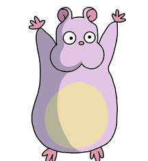

Boh
Bō, também conhecido como Boh ou Bebê, é o filho caçula de Yubaba no filme "A Viagem de Chihiro".
História
Boh aparece primeiro quando Chihiro Ogino tenta conseguir um emprego no balneário, enquanto ela argumenta com Yubaba Boh acorda por causa da agitação e começa a chorar e a bater na porta que leva de seu quarto ao escritório de Yubaba. Depois que Boh consegue arrombar a porta, Yubaba dá o emprego a Chihiro, enquanto eles discutem o que fez Boh acordar e fazer uma birra.
Também é sugerido que, antes de conhecer Chihiro, Boh não tinha sido visto andando ou mesmo de pé por conta própria. Isto é visto através da surpresa de Yubaba ao ver Boh de pé após seu retorno a ela com Chihiro e Haku. Pode-se supor que ele simplesmente se tornou menos preguiçoso e mais auto-suficiente após sua aventura.
Personalidade
Antes de conhecer Chihiro, Boh é uma criança egoísta e mimada. Ele estava acostumado a receber toda a atenção, presentes e comida que queria de Yubaba. Ele também desenvolveu um medo de germes (micofobia), demonstrado por seu impedimento inicial de deixar seu berçário.
Entretanto, sua personalidade muda rapidamente durante suas aventuras com Chihiro. Em sua forma de rato, ele desenvolve uma forte afiliação com o Pássaro de Yubaba, que foi transformado em uma criatura parecida com uma mosca e que muitas vezes o carregava quando eles não andavam sobre o ombro de Chihiro. Ao final destas aventuras, nós o vemos literalmente fazendo frente à sua mãe para ajudar Chihiro.
Inspiração
Ele é duas vezes maior do que sua mãe. Sua aparência e personalidade são inspiradas pelo Kintarou de um conto japonês.
No folclore, Kintarou veste um Harakake vermelho, um babete, com seu apelido Kin. Boh é apenas um apelido. Sua mãe Yubaba, que é uma bruxa, frequentemente o estraga com mimos. Não se sabe quem é o pai de Kintarou, nem o de Boh.